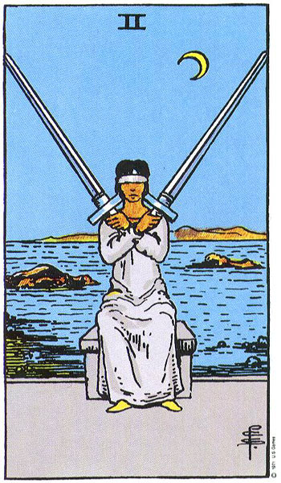

Sagitario
El Dos de Espadas representa la indecisión. ¿Qué debemos hacer? ¿Qué camino debemos tomar?
Tendrás que tomar una decisión bien difícil. No, no puedes dejarlo para después. Tienes que decidir ahora. Se que esto te crea confusión pero será lo mejor. En fin, sabes lo que tienes que hacer con respecto a tu principal preocupación.
Probablemente estas sobrecargado con información y sigues analizando. Pero no puedes seguir así para siempre.
En el tema del amor debes pensar si la pareja que tienes ahora te conviene. Toma una decisión. Si estas soltero podrían presentarse varios candidatos. Escoge sabiamente. No ignores tus sentimientos.
Ver otro signo
Volver al inicio
Habla con Amos